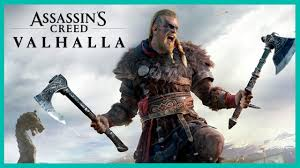

Main Heading
Spetmeber 17th, 2020
First int heading
The Guillemot family had established themselves as a farming support business for farmers in the Brittany province in northwest France and nearby regions, including into the United Kingdom. The five sons of the family – Christian, Claude, Gérard, Michel, and Yves – helped with the sales, distribution, accounting and management of the company with their parents before university. All five gained business experience while at university, which they brought back to the family business to help improve it, at a time where farming businesses were starting to wane. The brothers came up with the idea of diversification to sell other products of use to farmers; Claude began with selling CD audio media, and later the brothers expanded to computers and additional software which included video games.
Link to ubisoft Creed logoUbospft Expansion
On 9 September 2003, Ubi Soft announced that they would change their name to simply Ubisoft, and introduced a new logo known as "the swirl". In December 2004, rival gaming corporation Electronic Arts purchased a 19.9% stake in the firm. Ubisoft referred to the purchase as "hostile" on EA's part. Ubisoft's brothers recognised they had not considered themselves within a competitive market, and employees had feared that an EA takeover would drastically alter the environment within Ubisoft. EA's CEO at the time, John Riccitiello, assured Ubisoft the purchase was not meant as a hostile manoeuvre, and EA ended up selling the shares in 2010.
